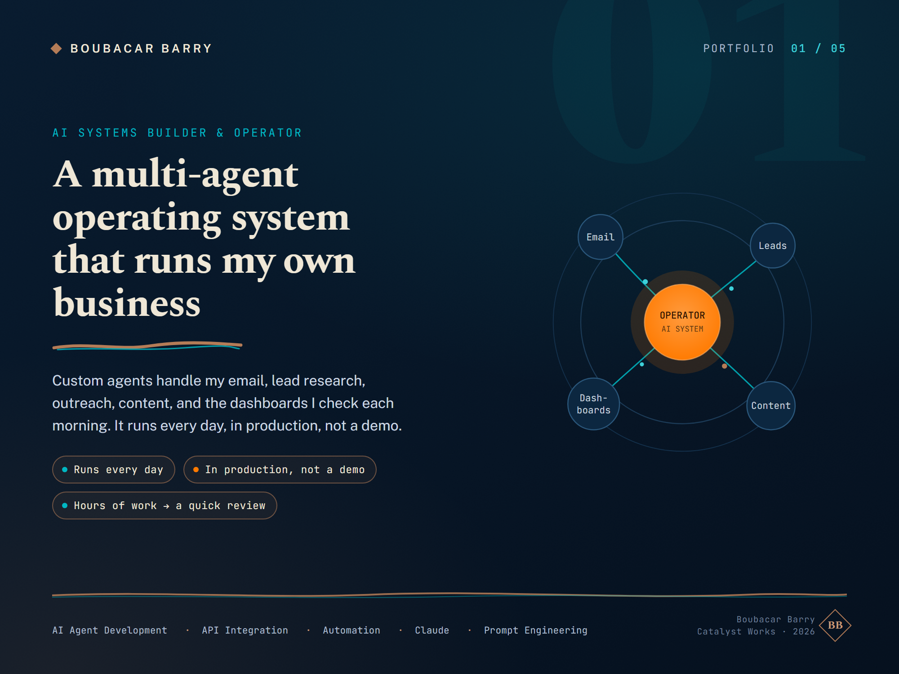
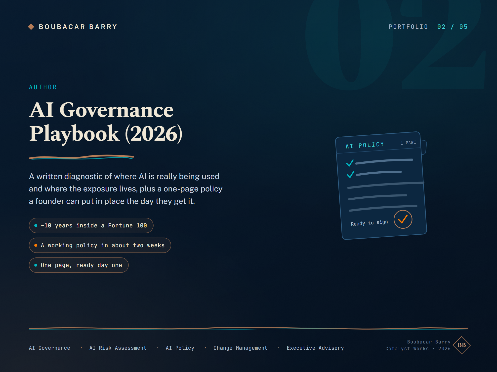
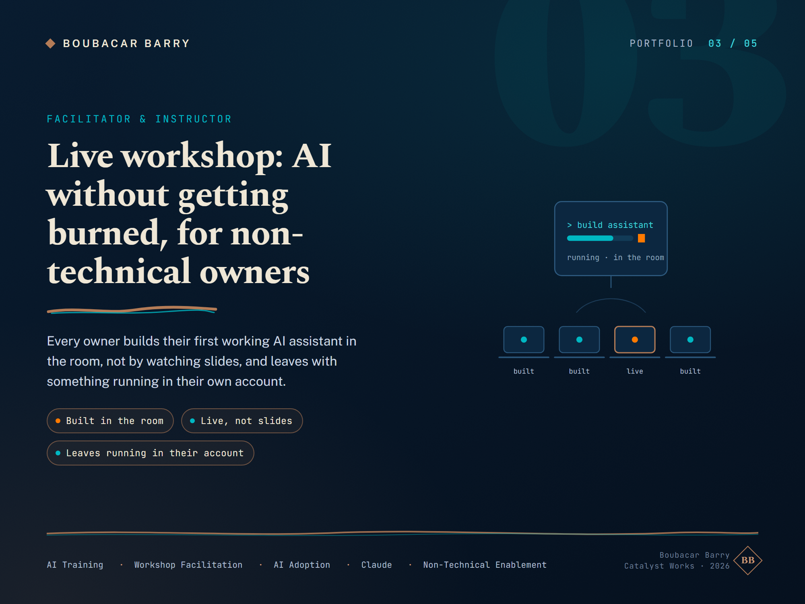
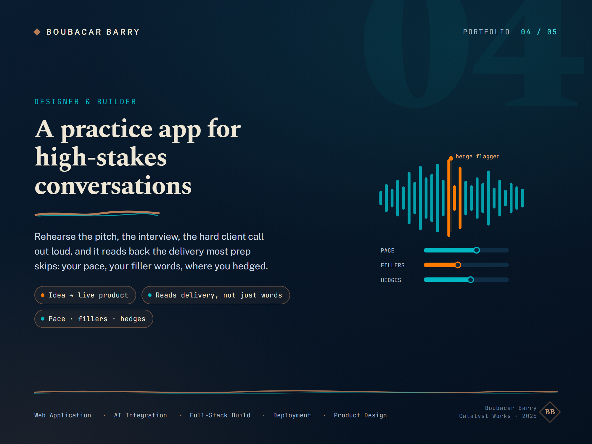
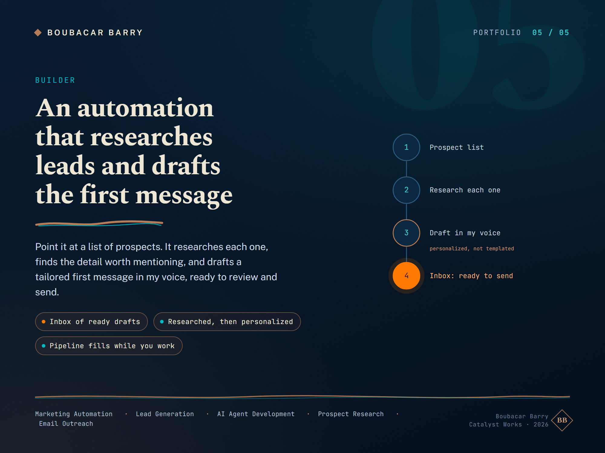

One-pass decision doc · nothing goes live on Upwork without your go
Every choice you need to make is in the decision block at the top, in one glance. Mark each one, and the rest of the page is the reasoning and the assets behind it. Your live profile today: South Jordan UT, $95/hr, boost off, verified veteran, video intro, MBA. Below is what changes and why.
Five calls. Recommendation is in green on each.
This is the preview a client reads before "see more". Voice score 92. Paste-ready and locked, do not water it down. It leads with the pain (a team exists, but everything routes through you), proves it with a real build and a real number, and never claims a client dollar figure you have not earned.
You've got good people, but everything still routes through you. I find the work that eats your team's week and fix it, usually with plain automation, not some giant AI build.
I run my own business on a multi-agent system I built myself. One agent in it does an hour or two of research in five to ten minutes and hands me back a scored page I can use on the spot. That is the kind of time I go find in your business and give back to your team.
We start with one workflow, fixed scope, built live in your own account, so you walk away able to run it without me. Not a vendor you stay dependent on.
If your team stays busy but everything waits on you, let's talk.
Your employment history stays factually accurate: your role at GE Vernova was HR Business Partner, and it stays labeled that way. Nothing here claims you ran HR, ran operations, or held an executive role. What we surface is the one automation fact buried in that bullet, and we lead with it, because it is your single piece of "delivered inside a Fortune 100" proof.
Inside a Fortune 100 (GE Vernova), I put LLM tools to work on internal HR processes and worked on automation to cut repetitive manual tasks. My role there was HR Business Partner, so this was automation applied where the stakes and the scrutiny were real, not a side project on a laptop. That instinct, find the busywork and take it out, is exactly what I do for clients now.
Confirm the verb. Your current bullet says "explored automation." If you actually shipped a working automation there, we can say "built" or "delivered" (stronger, more credible). If it was exploratory, we keep "worked on / explored." Truth-only, your call, this is the one word that changes how hard we can lean.
These are already right on your live profile. Do not touch them, they carry weight.
Design-audit scored these 18/20. They are previewed here so you can approve the set. On your approval, these same image files drop into the Upwork profile's portfolio. Real builds only, no invented metrics.

The multi-agent system that runs my business
The operator proof, most people who pitch AI have never built one.

AI Governance Playbook
Your keeper card, already on the live profile.

The workshop
Structure of the room, what attendees walk out with.

Live practice app
A real, shipped, working build people can touch.

Lead-research automation
Finds, enriches, and follows up on prospects on its own.
Each rung is the concrete trigger that unlocks it, plus exactly what to add or change once you have earned it. You always know your next move. Truth-only holds at every rung: a line goes up only once it is actually true. Phase 0 is where you are today; phase 10 is the fully-optimized destination profile.
Right now your live profile straddles two lanes: AI-automation on one side, HR and leadership advisory on the other. On Upwork that split works against you, the algorithm cannot decide who to show you to, and buyers cannot tell in three seconds what you are for.
Recommendation: tighten everything to the automation niche.
Title, skills, overview, portfolio, all pointed at one thing: finding the busywork that eats a team's week and taking it out with automation. The HR background stays as truthful context (it is why adoption sticks), but it stops being a second service you advertise. One niche, or you rank for nothing.
This is a clear recommendation, not a done deal. It is your call. But every other change on this page assumes the automation niche, so if you want to keep the HR/leadership lane visible too, tell me and we rebalance the whole set.
Internal review deliverable. Everything here is outward-facing prep for your profile, but nothing goes live on Upwork until you say go.